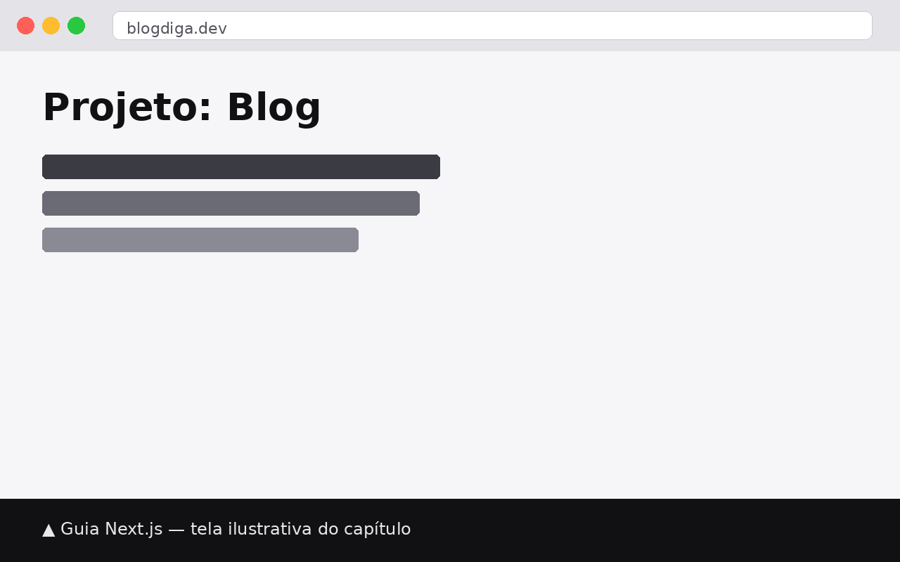

Projeto: Blog com SSG, markdown e rotas dinâmicas
A Ana escribe seus textos em arquivos .md (markdown) na pasta posts/. Hoje ela vai transformar isso num blog de verdade: cada post vira uma página estática (/blog/meu-post) gerada no build, com SEO próprio (título e descrição por post) e com ISR — dá para publicar um post novo só adicionando o arquivo, sem rebuild manual.
npx create-next-app@latestcom App Router e JavaScript- Ler markdown do disco com
fs+path(só no servidor!) generateStaticParams()+export const revalidate = 3600(ISR)generateMetadata()para título/description/OpenGraph por post- Renderizar markdown com
marked(ounext-mdx-remote)
A ideia: a gráfica que imprime o jornal inteiro no automático
Um blog estático é como uma gráfica que imprime o jornal inteiro durante a madrugada: quando o primeiro leitor chega de manhã, todas as páginas já estão prontas e idênticas para todo mundo — o servidor só entrega o papel (rápido e barato). O slug da URL (/blog/como-fazer-bolo) é o nome na capa de cada exemplar. Com o ISR, a gráfica religa sozinha de hora em hora para incluir as notícias novas — sem reimprimir o jornal inteiro.
O markdown entra como a matéria-prima: arquivos .md com um cabeçalho (frontmatter: título, data, resumo) e o corpo do texto. No build, o Next.js lê esses arquivos do disco (isso só pode acontecer no servidor, por isso usamos Server Components), converte para HTML e gera uma página estática por post. O SEO de cada post vem do generateMetadata, que devolve <title> e description próprios.
Passo 1 — criar o projeto e a pasta de posts
npx create-next-app@latest blog-da-ana # perguntas: TypeScript? No · ESLint? Yes · Tailwind? No · src/? No · App Router? Yes · import alias? No cd blog-da-ana npm run dev
--- titulo: "Meu primeiro post" data: "2025-01-10" resumo: "Como montei meu blog com Next.js em uma tarde." --- ## Olá, mundo! Este é o **primeiro post** do blog da Ana. Ele vive num arquivo `.md` e virou uma página estática em `/blog/primeiro-post`.
--- titulo: "SSG vs SSR na prática" data: "2025-01-15" resumo: "Quando gerar no build e quando gerar na hora." --- Explico aqui a diferença entre **SSG** e **SSR** com exemplos do blog.
Passo 2 — a biblioteca que lê os posts (só servidor)
import fs from 'fs';
import path from 'path';
import { marked } from 'marked';
const PASTA = path.join(process.cwd(), 'posts');
function lerFrontmatter(texto) {
const m = texto.match(/^---\n([\s\S]*?)\n---\n([\s\S]*)$/);
const dados = {};
m[1].split('\n').forEach(l => {
const [k, ...v] = l.split(':');
dados[k.trim()] = v.join(':').trim().replace(/^"|"$/g, '');
});
return { dados, corpo: m[2] };
}
export function listarPosts() {
return fs.readdirSync(PASTA)
.filter(f => f.endsWith('.md'))
.map(f => {
const slug = f.replace(/\.md$/, '');
const { dados } = lerFrontmatter(fs.readFileSync(path.join(PASTA, f), 'utf8'));
return { slug, ...dados };
})
.sort((a, b) => b.data.localeCompare(a.data));
}
export function pegarPost(slug) {
const texto = fs.readFileSync(path.join(PASTA, slug + '.md'), 'utf8');
const { dados, corpo } = lerFrontmatter(texto);
return { slug, ...dados, html: marked.parse(corpo) };
}
npm install marked
Passo 3 — a home com a lista (SSG)
import Link from 'next/link';
import { listarPosts } from '@/lib/posts';
export const revalidate = 3600; // ISR: a home recria a cada 1h (posts novos entram sozinhos)
export default function Home() {
const posts = listarPosts();
return (
<main>
<h1>📰 Blog da Ana</h1>
<ul>
{posts.map(p => (
<li key={p.slug}>
<Link href={`/blog/${p.slug}`}>{p.titulo}</Link>
<small> — {p.data}: {p.resumo}</small>
</li>
))}
</ul>
</main>
);
}
Passo 4 — a página do post (rota dinâmica estática + SEO)
import { listarPosts, pegarPost } from '@/lib/posts';
import { notFound } from 'next/navigation';
export const revalidate = 3600; // ISR também aqui
// gera /blog/primeiro-post, /blog/segundo-post… no build
export async function generateStaticParams() {
return listarPosts().map(p => ({ slug: p.slug }));
}
export const dynamicParams = true; // post novo (fora do build) ainda abre na hora (SSR) e depois vira estático
// SEO por post: título e description próprios no <head>
export async function generateMetadata({ params }) {
const { slug } = await params;
const post = pegarPost(slug);
if (!post) return {};
return {
title: `${post.titulo} | Blog da Ana`,
description: post.resumo,
openGraph: { title: post.titulo, description: post.resumo },
};
}
export default async function PaginaPost({ params }) {
const { slug } = await params; // Next.js 15: params é Promise
let post;
try { post = pegarPost(slug); } catch { notFound(); }
return (
<article>
<h1>{post.titulo}</h1>
<small>{post.data}</small>
<div dangerouslySetInnerHTML={{ __html: post.html }} />
</article>
);
}
export default function NotFound() {
return <p>😕 Post não encontrado. <a href="/">Voltar ao blog</a></p>;
}

Missão: no código abaixo, a rota dinâmica está comentada. Complete a função generateStaticParams() para devolver [{ slug: 'primeiro-post' }, { slug: 'segundo-post' }] a partir da lista — é ela que faz o Next.js gerar as páginas estáticas no build. Rode e clique em Verificar missão.
const POSTS = [
{ slug: 'primeiro-post', titulo: 'Meu primeiro post' },
{ slug: 'segundo-post', titulo: 'SSG vs SSR na prática' },
];
// TODO: export async function generateStaticParams() {
// return POSTS.map(p => ({ slug: p.slug }));
// }
function App() {
return (
<div>
<h1>📰 Blog</h1>
<ul>{POSTS.map(p => <li key={p.slug}>/blog/{p.slug} — {p.titulo}</li>)}</ul>
</div>
);
}const POSTS = [
{ slug: 'primeiro-post', titulo: 'Meu primeiro post' },
{ slug: 'segundo-post', titulo: 'SSG vs SSR na prática' },
];
async function generateStaticParams() {
return POSTS.map(p => ({ slug: p.slug })); // gera /blog/primeiro-post, /blog/segundo-post…
}
function App() {
return (
<div>
<h1>📰 Blog</h1>
<ul>{POSTS.map(p => <li key={p.slug}>/blog/{p.slug} — {p.titulo}</li>)}</ul>
</div>
);
}Quando dá errado
dynamicParams = false com generateStaticParams — fora da lista não gera nada. Com dynamicParams = true (padrão), o post novo cai no SSR na hora e vira estático depois do revalidate:GET /blog/post-novo → 404 in production (dynamicParams = false) → mude para `export const dynamicParams = true` (ou rode o build de novo)
posts/ num Client Component ('use client') — o fs não existe no navegador e o build quebra:Module not found: Can't resolve 'fs' → a leitura de arquivos só pode acontecer em Server Component / lib usada pelo servidor
Exercícios
Para gerar no build as páginas /blog/primeiro-post etc., a rota dinâmica exporta:
O SEO (título e descrição) de cada post vem de:
Para publicar um post novo sem rebuild (ISR), basta:
Complete a rota dinâmica do post:
Complete a opções do markdown seguro no servidor: